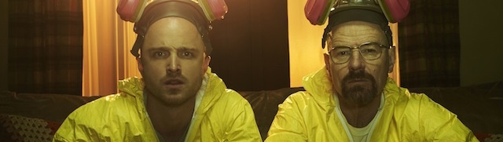
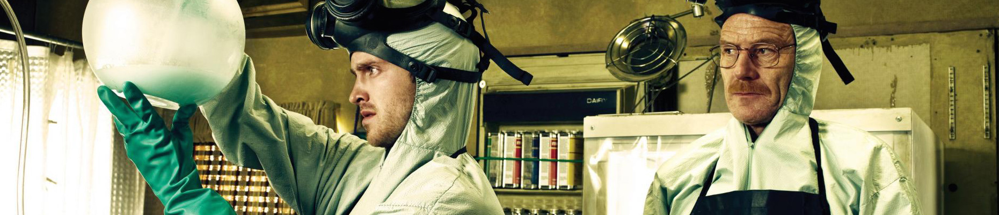

name: inverse layout: true class: center, middle, inverse --- # STAT 105: Lecture 2 ## Why Engineers Study Statistics ### Chapter 1: Introduction, Continued ### Chapter 2: Data Collection .footnote[Course page: [imouzon.github.io/stat105](https://imouzon.github.io/stat105)] --- # Section 1.2 ## Basic Terminology, Continued --- layout:false .left-column[ ## What and Why ## Terms ### Types of Studies ### Types of Data ### Ex: Machine Parts ### Uni/Multi/Repeat ### Structures ] .right-column[ ## Types of Data Structures The complexity of our data we gather changes based on our objective. Consider the following scenarios: **Scenario 1** - We have designed a less expensive method for cleaning the byproduct of our production process. What constitutes clean is determined by law. **Scenario 2** - Synthesis of a certain chemical can be done in a number of ways. We are considering two sets of substrates, three environments where production can occur, and three chemists to perform the synthesis. Our goal is to get the purest end product. ] ??? **Scenario 1** We only need one sample from our method to determine if it meets the legal guidelines **Scenario 2** We need multiple samples in order to compare the methods Second scenario helps us understand factorial studies --- layout:false .left-column[ ## What and Why ## Terms ### Types of Studies ### Types of Data ### Ex: Machine Parts ### Uni/Multi/Red tepeat ### Structures ] .right-column[ ## Factorial Studies > **Factorial Studies** involve scenarios in which several process variables are indentified as being of interest and data are collected under possible combinations of these scenarios. > **Complete Factorial Studies** are factorial studies where data is collected from each possible combination of the process variables > **Partial Factorial Studies** are factorial studies where data is collected from each possible combination of the process variables > We call the process variables **factors** and the settings we examine them at **levels** ] --- layout:false .left-column[ ## What and Why ## Terms ### Types of Studies ### Types of Data ### Ex: Machine Parts ### Uni/Multi/Red tepeat ### Structures ] .right-column[ <center> <h2> Factorial Studies Example </h2>  </center> > A pair of chemists, [Walter and Jessie](https://www.youtube.com/watch?v=eQR1r1KTjaE), are attempting to synthesize a chemical and consider purity to be the most important quality in the product. There are three environments available to them (Winnebago/Basement/Lab) and two precursors (pseudoephedrine/methylamine). They are both willing to take either the role of "lead cook" and will try all their options in order to get the best results. - What are the factors and factor levels being examined here? - How many combinations of the factor levels are there? - What are Walt and Jessie synthesizing? ] ??? lead cook - Walter, Jessie environment - winnebago, basement, lab precursor - pseudo, methylamine 2 x 3 x 2 = 12 WRITE OUT THE LEVELS AFTER SOME TIME FOR THEM TO WRITE THEM OUT --- layout:false .left-column[ ## What and Why ## Terms ### Types of Studies ### Types of Data ### Ex: Machine Parts ### Uni/Multi/Red tepeat ### Structures ] .right-column[ <center> <h2> Factorial Studies Example, cont </h2>  </center> ``` cook env precursor 1. walt winne pseudo 2. walt winne methylamine 3. walt basement pseudo 4. walt basement methylamine 5. walt lab pseudo 6. walt lab methylamine 7. jessie winne pseudo 8. jessie winne methylamine 9. jessie basement pseudo 10. jessie basement methylamine 11. jessie lab pseudo 12. jessie lab methylamine ``` ] ??? --- layout:false .left-column[ ## What and Why ## Terms ### Types of Studies ### Types of Data ### Ex: Machine Parts ### Uni/Multi/Red tepeat ### Structures ] .right-column[ <center> <h2> Factorial Studies Example, cont </h2> </center> After testing each scenario, Walter and Jessie decide that the best combination to use is Walt as cook in the lab with methylamine. However, a new "chemist" Victor has joined the group and is going to try to be the cook and "follow the recipe" in the lab. Jessie also tries a new environment, South America, where only methylamine is available. - If we consider all the past levels to be part of this new study, how many combinations of factor levels are now possible? - Victor never works in the Winnebago, the basement, or South America. Walter never works in South America. What kind of study is this? ] --- layout:false .left-column[ ## What and Why ## Terms ### Types of Studies ### Types of Data ### Ex: Machine Parts ### Uni/Multi/Red tepeat ### Structures ] .right-column[ <center> <h2> Factorial Studies Example, cont </h2> </center> ``` cook env precursor 1. walt winne pseudo 2. walt winne methylamine 3. walt basement pseudo 4. walt basement methylamine 5. walt lab pseudo 6. walt lab methylamine 7. jessie winne pseudo 8. jessie winne methylamine 9. jessie basement pseudo 10. jessie basement methylamine 11. jessie lab pseudo 12. jessie lab methylamine 13. jessie so. am. methylamine 14. victor lab methylamine ``` ] ??? --- name: inverse layout: true class: center, middle, inverse --- # Section 1.3 ## Measurement: It's Importance and Difficulty --- layout:false .left-column[ ## What and Why ## Terms ## Measurements ### Key Words ] .right-column[ ## If You Can't Measure, You Can't Do Statistics ### Or Engineering For That Matter - **Validity**: faithfully representing the aspect of interest - **Precision**: the amount of variation in repeated measures - **Accuracy**: aka "unbiasedness"; how close a measurement is to the true value "on average" We **calibrate** to improve accuracy ] ??? --- name: inverse layout: true class: center, middle, inverse --- # Section 1.4 ## Mathematical Models --- layout:false .left-column[ ## What and Why ## Terms ## Measurements ### Key Words ] .right-column[ ## If You Can't Measure, You Can't Do Statistics ### Or Engineering For That Matter - **Validity**: faithfully representing the aspect of interest - **Precision**: the amount of variation in repeated measures - **Accuracy**: aka "unbiasedness"; how close a measurement is to the true value "on average" We **calibrate** to improve accuracy ] ??? ---